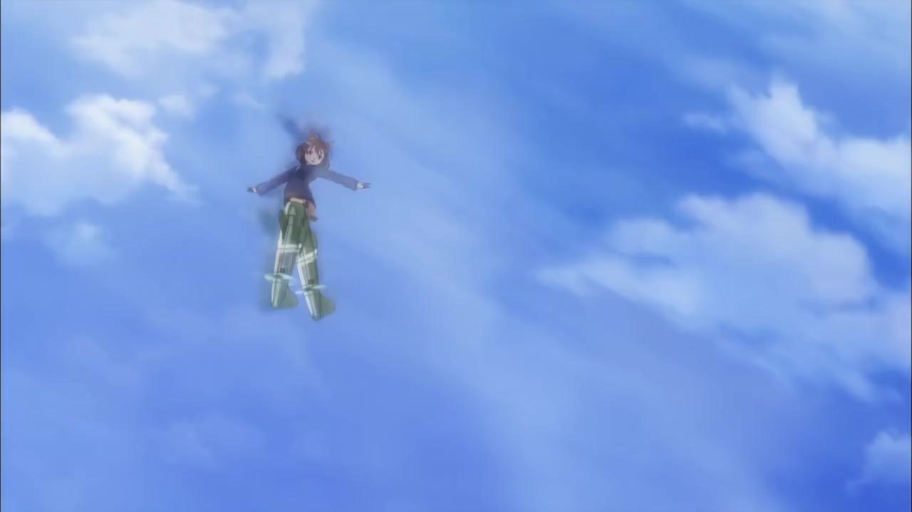
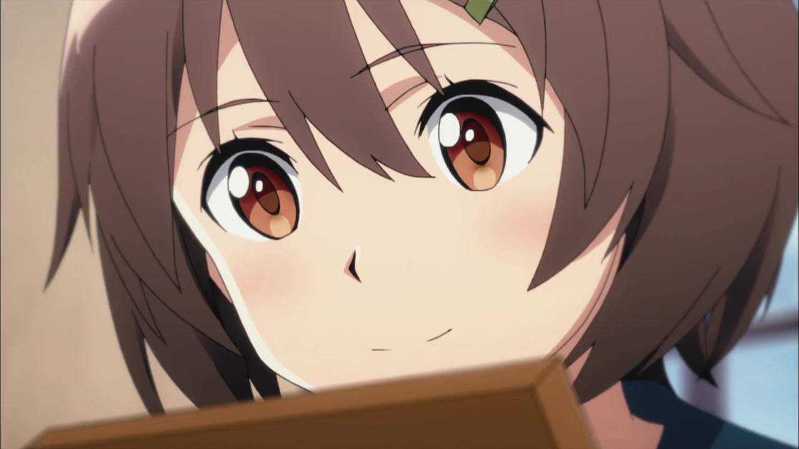
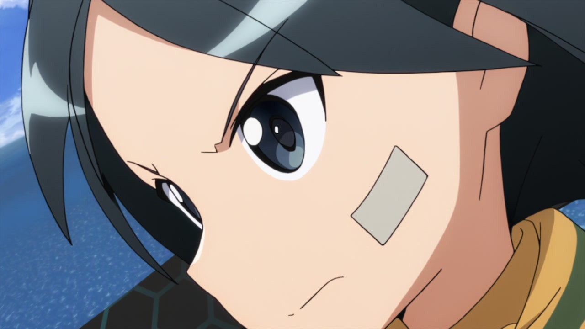

Back
BD Textless VS TV Raw
The hideous motion blur has been removed, and contrails have been added to Hikari's strikers.

Hikari's face and uniform collar has been redrawn.

The shaped backgrounds are coloured differently, generally darker than the TV version.
Krupinski's face is slightly redrawn.
As is Georgette's.
And Shimohara.
And Rossmann.
But not Rall.
The battle scene sees many changes and improvements, nearly all of the characters have been redrawn, most of the shots have been relit and reframed, with slightly different camera moves in some places. Since nearly every frame is different in some small way, I'll only comment on reframing when it's especially noticeable.
First up, the Neuroi craft is slightly further away, and the ships are now leaving a wake. The lighting is brighter and softer.
Hikari's butt is no longer CGI. Also, Hikari herself is no longer CGI.
The heavy shading used to hide the bad CGI has been removed.
Kanno is leaning back further, and is much more detailed overall.
Possibly the most noticeably improved frame of the entire sequence.

It seems the CGI Nipa was traced over.
Krupinski is looking good
Reframed shot to bring the Neuroi more central.
Shimohara is no longer a blurry mess.
This bit was redone with bigger and closer explosions, some obscuring the camera at points
Georgette
Brighter muzzle flash from Rossman
hahahaha.
Rall.
Hikari now has propellers and the neuroi is now central in the frame
This explosion is more vivid and has a better looking flash.
Takami's face has been redrawn.
She no longer has a lazy left eye.
And finally, closing shot of the emblem is now inside a hangar and is lit completely differently. Strangely, some of the damage to the wall around it is almost identical.